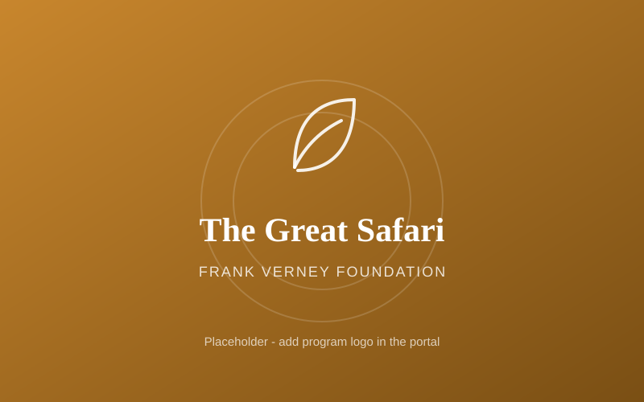
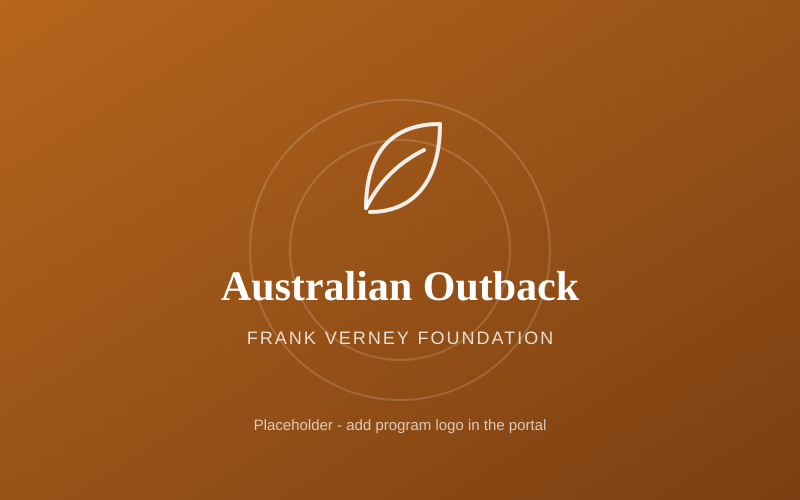
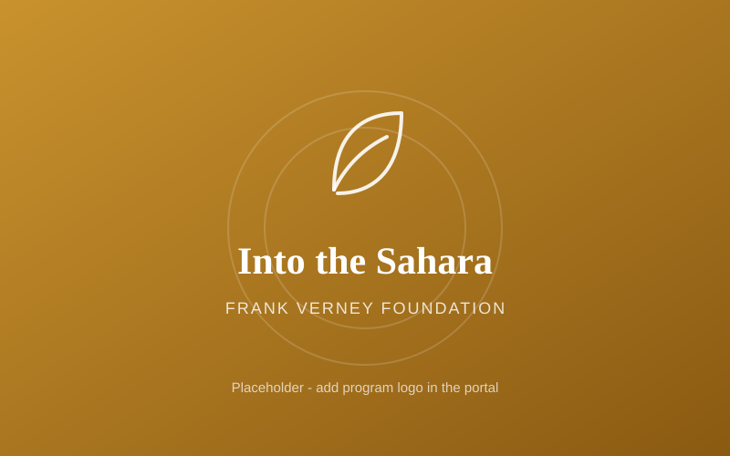
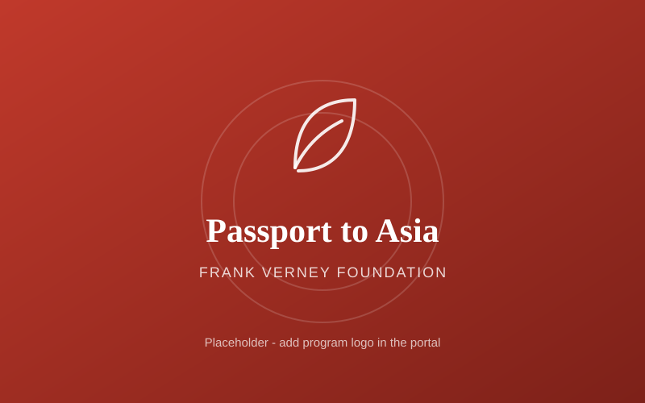
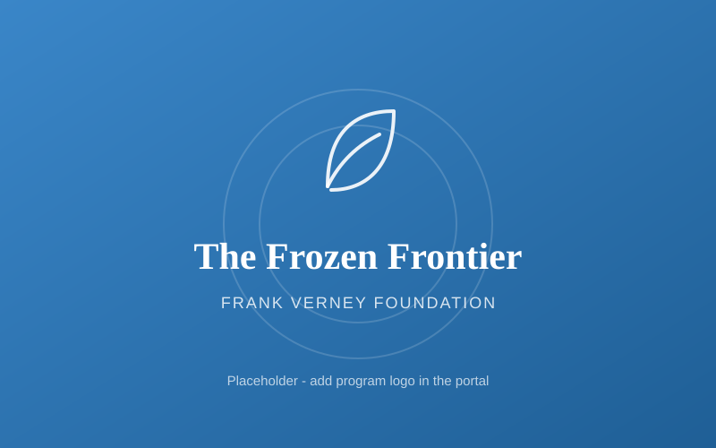
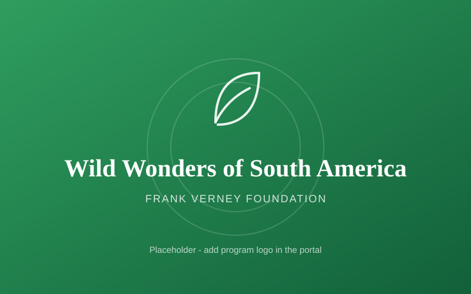
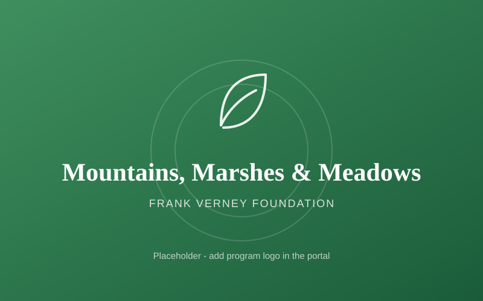
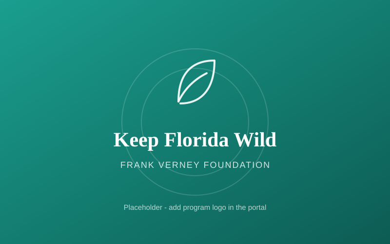

Six interactive programs that introduce children and families to the amazing world of wildlife through hands-on learning, conservation education, and unforgettable experiences.
From toddlers to high schoolers, every program is adapted to be age-appropriate. Choose an age group to see what fits.
New program artwork is on the way - Frank can add each logo in the portal.

AfricaSet off across the African savanna to meet elephants, lions, giraffes and the wonder of the great migration.

AustraliaJourney down under to meet kangaroos, koalas, dingoes and the remarkable reptiles of Australia's wild interior.

DesertCross the world's greatest desert to discover how camels, fennec foxes and hardy reptiles survive the extreme heat.

AsiaTravel from bamboo forests to tiger reserves to meet the iconic and endangered animals of Asia.

PolarHead to the poles to learn how penguins, polar bears and seals thrive in Earth's coldest places.

AmazonVenture into the Amazon and Andes to discover sloths, macaws, jaguars and incredible biodiversity.

HabitatsExplore three connected habitats and the wildlife that depends on each - from peaks to wetlands to grasslands.

FloridaProtect our own backyard - manatees, panthers, sea turtles and the native wildlife of Florida.
 Reptiles
ReptilesAn interactive program that introduces children and families to the amazing world of reptiles through hands-on activities and engaging experiences. Participants discover the importance of reptiles in nature while building respect for these often-misunderstood animals.
 Native Wildlife
Native WildlifeAn engaging program that teaches children and families about native wildlife and the animals that share our local environments. Participants learn the importance of coexisting with wildlife, protecting natural habitats, and becoming responsible stewards in their own communities.
 Primates
PrimatesAn interactive program that introduces children and families to the fascinating world of primates. Participants explore primate behaviors, habitats, intelligence, and social structures - learning why protecting these incredible animals protects whole ecosystems.
OceansAn immersive program that introduces children and families to the wonders of the ocean and marine conservation. Participants explore marine animals, coral reefs, sharks, sea turtles, and ocean ecosystems - and discover how everyday actions help protect our oceans for future generations.
 Birds & Shores
Birds & ShoresAn interactive program that introduces children and families to the incredible world of birds, coastal wildlife, and shoreline ecosystems. Participants explore bird adaptations, migration, coastal habitats, and the importance of protecting shorelines for future generations.
 Insects
InsectsA fun, interactive program that introduces children and families to the fascinating world of insects and other small creatures. Participants learn how these tiny animals play a huge role in ecosystems through pollination, decomposition, and biodiversity - and how to help protect them.
Interested in bringing a program to your school, library, or community group? Get in touch and we'll help you plan a visit.
Every program is built around real experiences - because curiosity is the first step toward conservation. When a child holds a fossil, meets a rescued reptile, or maps a migration, protecting wildlife stops being an idea and becomes personal.
Education that turns curiosity into action

Your support keeps these programs free for the children and families who need them most. Be their voice - fund the next generation of conservationists.